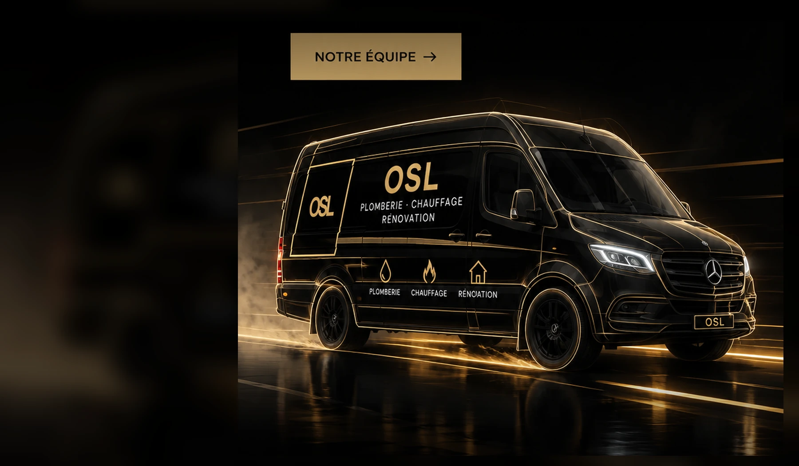

DEVIS STRUCTURÉDemande claire en quelques étapes.
DENNEY · BELFORT · 130 KM
La technique
devient élégance.
Plomberie, chauffage et rénovation avec une approche précise, des solutions lisibles et des finitions soignées.
03MÉTIERS130KM5J/7HORAIRES PRO
OSL / SIGNATUREEAU
CHALEUR
ESPACEUn seul langage visuel
CHALEUR
ESPACEUn seul langage visuel
CHANTIER PROPREProtection, méthode et finitions soignées.
SUIVI DIRECTUn interlocuteur du premier échange à la fin.
ZONE LARGEBelfort et alentours jusqu’à 130 km.
LES MÉTIERS OSL
Trois métiers.
Une même exigence.
Réseaux d’eau, confort thermique et rénovation se rejoignent autour d’un même objectif : une installation cohérente, propre et adaptée au bâtiment.
01⌁
Plomberie
Réseaux d’eau, sanitaires, robinetterie, évacuations, chauffe-eau et dépannage.
Découvrir ↗02◉Chauffage
PAC, chaudières, radiateurs, planchers chauffants, régulation et confort thermique.
Découvrir ↗03◇Rénovation
Salle de bains, transformation d’espace, réseaux techniques et finitions soignées.
Découvrir ↗APPROCHE OSL
Eau, chaleur,
espace.
Chaque projet associe technique, usage et finition. L’objectif : comprendre l’installation dans son ensemble avant d’intervenir.
OSL / APPROCHE TECHNIQUEL’eau,
la chaleur,
l’espace.
la chaleur,
l’espace.
PlomberieAlimentation, évacuation et sanitaire pensés pour rester logiques et accessibles.
ChauffageProduction, diffusion et régulation étudiées ensemble pour le confort thermique.
RénovationRéseaux, implantation et équipements coordonnés pour une transformation propre.
GROHEhansgroheGeberitVIEGAViessmannVaillantDaikinAtlanticGROHEhansgroheGeberitVIEGAViessmannVaillantDaikinAtlantic
MOBILITÉ OSL · CONCEPT
Une identité
jusque sur le terrain.
Un concept de véhicule graphite et champagne pensé pour être identifiable dès l’arrivée sur chantier et prolonger l’identité OSL sur le terrain.
Graphitebase premiumChampagnesignature visuelleOSLidentité intégrée
Visualisation de concept. Ne constitue pas un partenariat, une affiliation ou une approbation officielle de Mercedes-Benz.
01PLOMBERIE
02CHAUFFAGE
03RÉNOVATION
OSL / CINEMATIC FLEET / LIVE
DEMANDE DE DEVIS
Votre projet,
bien cadré dès le départ.
Décrivez votre besoin en quelques étapes : métier, chantier, commune, délai, photos et coordonnées.
ÉTAPE 01 → 05
Ouvrir le configurateur Préparez une demande claire en quelques minutes.
Les informations utiles sont réunies pour faciliter le premier échange et éviter les allers-retours inutiles.